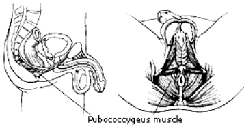

PC 肌锻练
下面指明了你的 PC 肌肉所处的位置，以及通过练习 PC 肌，能给你的身体以及性生活带来什麽。
我们知道，输精管用来释放精子，在射精的时候，前列腺收缩，喷射出精液。这一练习在本手册中是最重要的，能改变你的生活，通过每天练习，给你健康良好的前列腺。
为什麽要锻练 PC 肌？- 锻练你控制射精的肌肉，避免早泄
- 锻练出具有“肌肉感”的阴茎
- 锻练出如你所愿的随时都能勃起的，坚硬如石的阴茎
- 改善阴茎血液的循环
- 显著改善性能力
- 提高射精量和射精频率
- 改善排尿不畅
- 锻练出具有多次性高潮，而无疲惫感
- 锻练出健康良好的前列腺，拯救你的生命
锻练你的 PC 肌，还有一大串的好处。这个练习能够治疗阳痿能一系列因年老而引起的性方面的疾病。一个明显的事实就是：阳痿等一系列性疾病都应该归咎于非常衰弱的未经良好锻练的 PC 肌。
许多人马上会想到：“那我究竟怎麽来锻练这个玩意儿呢？”别担心，我们很快就会知道的。以下我们会解释 PC 肌在什麽地方，如何确定锻练的部位，以及基本的 PC 肌收缩练习，以便为以后强烈的收缩练习做准备。

(PC 肌图例)
以上就是 PC 肌的解剖图。开始锻练 PC 肌的第一步，就是了解 PC 肌究竟处于什麽部位。有些人已经锻练 PC 肌好几年了，却不知到这就是 PC 肌。快速测试一下：试著勃起。如果你能让阴茎自然地勃起，那你就找到 PC 肌了。如果做不到，那等你去排尿的时候，试著憋住尿液。你用来憋住尿液的那些肌肉就是 PC 肌。如果连憋尿也憋不住，那你可真要好好做这个练习了。
哪些人需要锻练 PC 肌？每个人都需要锻练！男人、女人，每个人只要每天做 200-500 个 PC 肌收缩练习，那他（她）的性能力就能大大增强。真的，有些男人更加需要这种锻练。以下就是 PC 肌衰弱会引起的问题： 勃起无力
- 射精无力
- 射精量少，频度低
- 早泄
- 阳痿等等
这个练习无疑是十分重要的。因为，无论你的阴茎有多大，如果不能坚硬如石，那有什麽用呢？强有力的 PC 肌，能使你如愿以偿地行事，同时，还能给你一个健康的前列腺，拯救你的生命。
开始
如上所诉，能控制你排尿的，能够收缩的肌肉就是 PC 肌。中国古代道士也称这个练习为“提肛”，因为很显然，你在收缩的时候，肛门部位变得很紧了。
开始先做 10-20 个收缩动作，看看效果怎样。如果你做了 20 个收缩就感到累了，那你可真得好好练了。做 20 个收缩之后，再紧紧地收缩 PC 肌，尽可能地保持这个状态，越长越好。由于缺乏 PC 肌的锻练，开始你会觉得很累，但是经过几个月不间断的练习之后，你就能紧紧地收缩 PC 肌，来控制射精的衝动，直到衝动感消退。这时候才谈得上“性能力”！
热身
按照固定的节奏，收缩放松 PC 肌，做 30 个，然后休息半分钟。再同样做 2 套。每次休息半分钟。完成后，因为血液的流量增加了，所以你就会觉得能较好地控制 PC 肌了。
PC 肌夹紧练习
一次又一次地夹紧放松。开始做 30 次一套的，再慢慢开始做 100 次一套的。我目前能做 700 次一套，每次做到力竭为止。这样， PC 肌很快就能练成功，你会发现，每天清晨起来，你的阴茎都会坚硬如石头地勃起著。在你的馀生，你一定要每天做 300 个收缩练习啊！你会发觉这是对你的性健康和性能力最好的锻练方法。
长时间缓慢的收缩
先做 30 个收缩练习，热身一下。再保持收缩的状态，数 20 下，放松，休息半分钟。重複 5 次。经过几个月的练习，你就能在一次保持收缩的状态达几分钟。这个练习能使你的阴茎充分勃起，延长做爱的时间。最终你能练到做 10 次练习，每次都能保持收缩状态达 2 分钟。听起来好象多了一点，但是，好处是不言而喻的。你在射精的时候，可能会从房间的一边喷射到另一边。我已经说过，正是这个练习，使得彼得诺斯在色情行业里变得非常受欢迎。
PC 肌阶梯式练习
这个练习就是逐步增加收缩和放松 PC 肌次数的练习。开始，先收缩 PC 肌，保持住，再收缩得紧一点，保持住，再紧一点，再保持住 20 秒，然后放松一点，再放松一点。保持住，再放松一点，再保持住，再放松一点，直到完全放松。连续做 5 套。
PC 肌震颤
慢慢地收缩 PC 肌。这个慢的程度就是：要花 5 分钟才能完成这一过程。有时候，你可能会觉得实在不能再收缩了，但是还是应该继续。尽力收缩，直到 PC 肌开始发抖了。保持那个状态，慢慢地深呼吸半分钟。半分钟后，再试著更紧地收缩 PC 肌，直到进入一种新的状态。等到感实在忍受不了了，再放松，并做 20 个快速收缩。做完这个练习，你会觉得很累。请在练习的最后做这一练习。
提示
我发现每天在开车的时候做 PC 松紧练习，即方便，又有效。每次开车的时候，都做一做。几个月后，你就会感谢我啦！在等候绿灯的时候，开始收缩 PC 肌，下一个红灯处，再开始做。几个月后，你会发觉自己整天处于勃起状态，特别是早上醒来的时候！记住，所有的练习当中，这一练习是最重要的，就如我以前所说的，不管你是 18 公分还是 20 公分，如果不能象石头一样硬，那就是白搭！